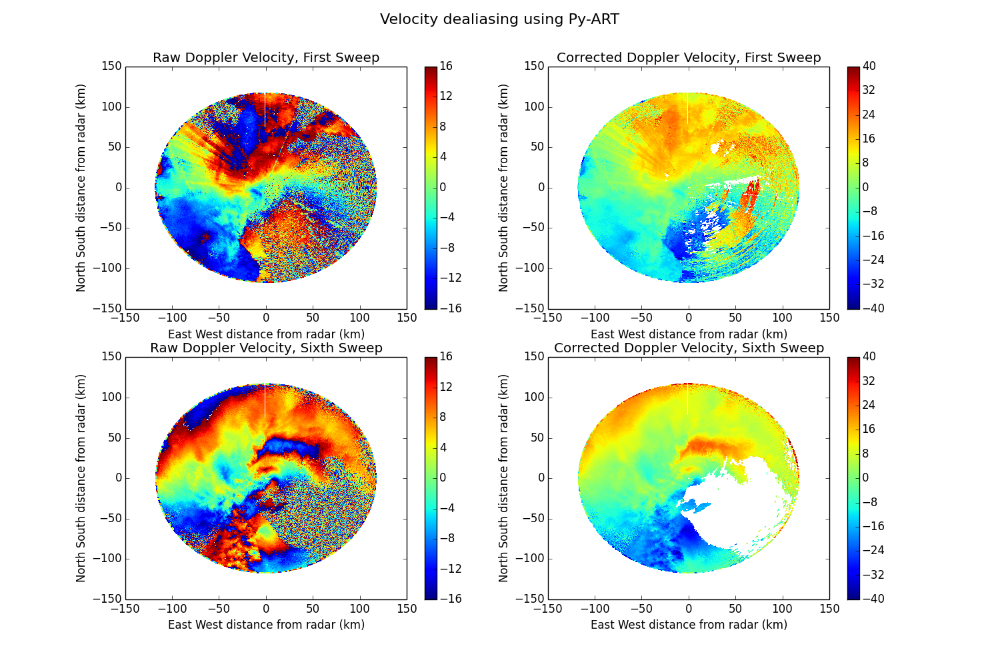

In this example doppler velocities are dealiased using the Univ. of Washington FourDD algorithm implemented in Py-ART. Sonde data is used for the initial condition of the dealiasing.
Python source code: plot_dealias.py
print __doc__
# Author: Jonathan J. Helmus (jhelmus@anl.gov)
# License: BSD 3 clause
import matplotlib.pyplot as plt
import netCDF4
import pyart
SOND_NAME = 'sgpinterpolatedsondeC1.c1.20110510.000000.cdf'
RADAR_NAME = '095636.mdv'
# read in the data
radar = pyart.io.read_mdv(RADAR_NAME)
# find and extract sonde data
target = netCDF4.num2date(radar.time['data'][0], radar.time['units'])
interp_sounde = netCDF4.Dataset(SOND_NAME)
t = pyart.correct.find_time_in_interp_sonde(interp_sounde, target)
height, speed, direction = t
# perform dealiasing
dealias_data = pyart.correct.dealias_fourdd(radar, height * 1000.0, speed,
direction, target)
radar.add_field('corrected_mean_doppler_velocity', dealias_data)
# create a plot of the first and sixth tilts
fig = plt.figure(figsize=(15, 10))
ax1 = fig.add_subplot(221)
display = pyart.graph.RadarDisplay(radar)
display.plot_ppi('mean_doppler_velocity', 0, vmin=-16, vmax=16, ax=ax1,
colorbar_label='',
title='Raw Doppler Velocity, First Tilt')
ax2 = fig.add_subplot(222)
display.plot_ppi('corrected_mean_doppler_velocity', 0, vmin=-40, vmax=40,
colorbar_label='', ax=ax2,
title='Corrected Doppler Velocity, First Tilt')
ax3 = fig.add_subplot(223)
display = pyart.graph.RadarDisplay(radar)
display.plot_ppi('mean_doppler_velocity', 5, vmin=-16, vmax=16,
colorbar_label='', ax=ax3,
title='Raw Doppler Velocity, Sixth Tilt')
ax4 = fig.add_subplot(224)
display.plot_ppi('corrected_mean_doppler_velocity', 5, vmin=-40, vmax=40,
colorbar_label='', ax=ax4,
title='Corrected Doppler Velocity, Sixth Tilt')
plt.suptitle('Velocity dealiasing using Py-ART', fontsize=16)
plt.show()
Total running time of the example: 7.30 seconds